Selected Work
NHLBI Homepage Redesign
Redesigning the NHLBI homepage to help people find the right information faster, while setting a stronger foundation for reusable UI patterns.

Overview
I led the redesign of the National Heart, Lung, and Blood Institute’s public homepage, which had expanded over time without a clear system behind it. As priorities shifted, new sections were layered in, but the structure didn’t evolve with them. We were sorting through content priorities, business goals, and CMS constraints all at once.
- What should visitors see first?
- How do we guide people toward the right health topics?
- How do we add new sections within Drupal without breaking the layout?
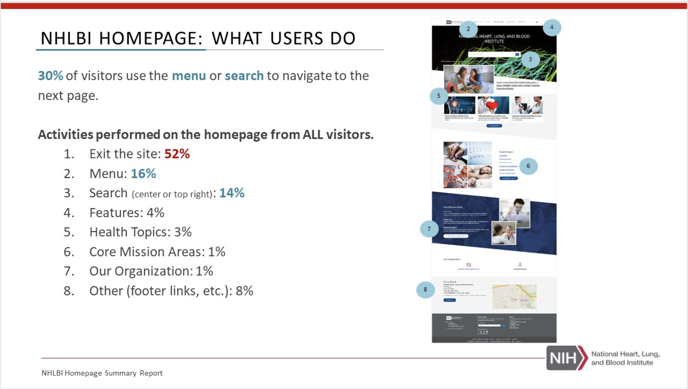
The Challenge
What we were solving: the homepage wasn’t guiding people well. Important content was hard to spot, navigation was unclear, and the layout didn’t support quick scanning.
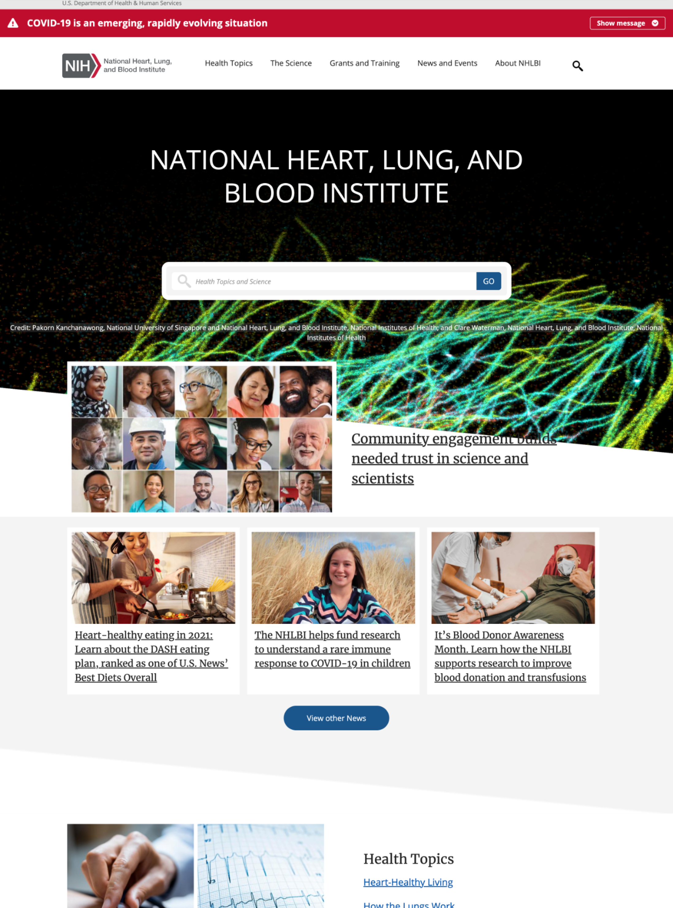
What we were seeing
- Too many competing entry points with no clear hierarchy
- Key tasks weren’t obvious (and people had to hunt)
- Content was dense and hard to scan on first pass
- Patterns weren’t consistent across modules
Strategy
We reframed the homepage around what people come here to do. That meant tightening the hierarchy, making the “next step” obvious, and using a smaller set of repeatable patterns instead of one-off layouts.
- Lead with intent: clearer primary actions and entry points
- Make it scannable: stronger headings, spacing, and content grouping
- Design for reuse: components that could work across other pages, not just the homepage
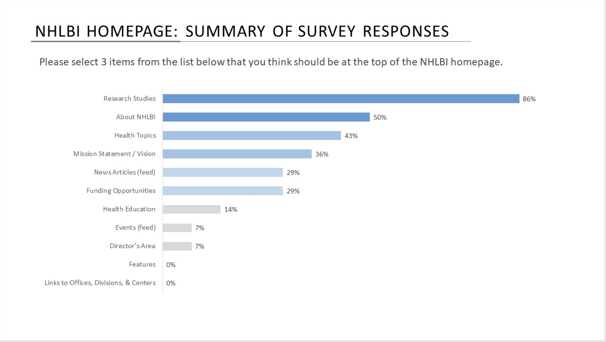
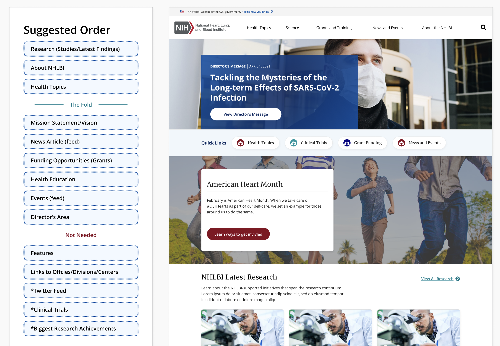
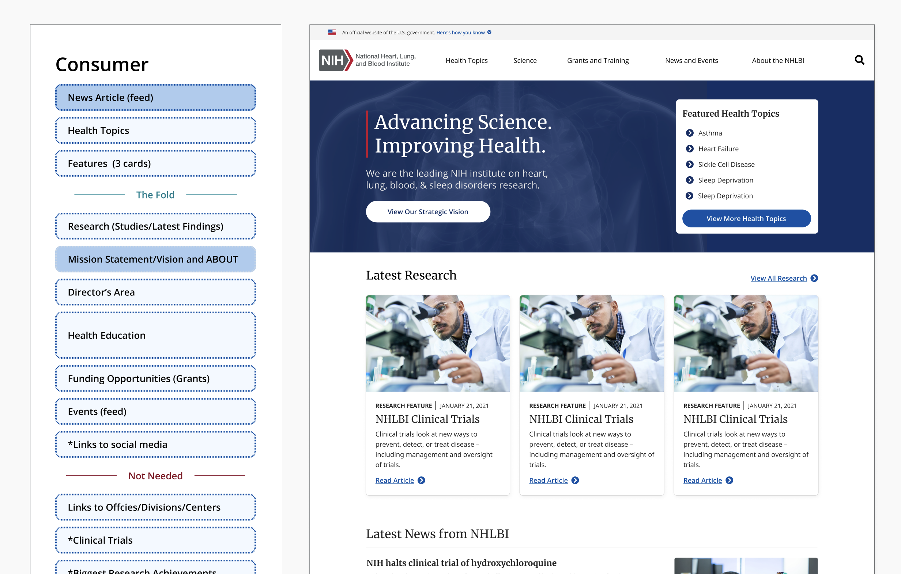
Key Design Decisions
Homepage layout and hierarchy
We simplified the page into a clear rhythm: a strong top story area, a consistent wayfinding pattern, and repeatable content modules. The goal was to make the page feel calmer and easier to scan without hiding important work.
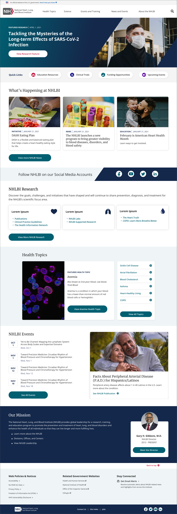
Reusable content modules
- Standardized cards and content blocks for repeatable layout
- Clear heading + supporting text patterns for scanning
- Consistent CTAs so users aren’t guessing what happens next
Research & Validation
I partnered closely with UX research as we iterated. Their findings helped us pressure-test page hierarchy, content grouping, and whether users understood where to go next.
We used a mix of quick tests and behavioral tools so decisions stayed grounded in what people did, not just what stakeholders preferred.
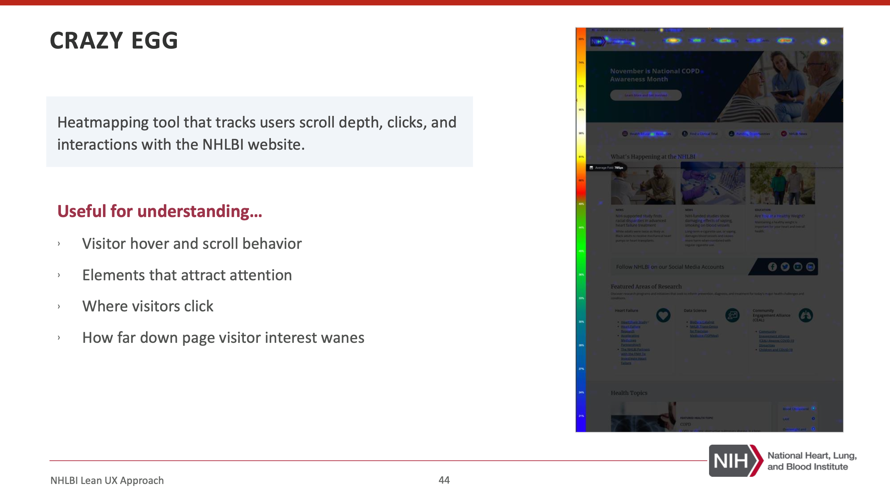
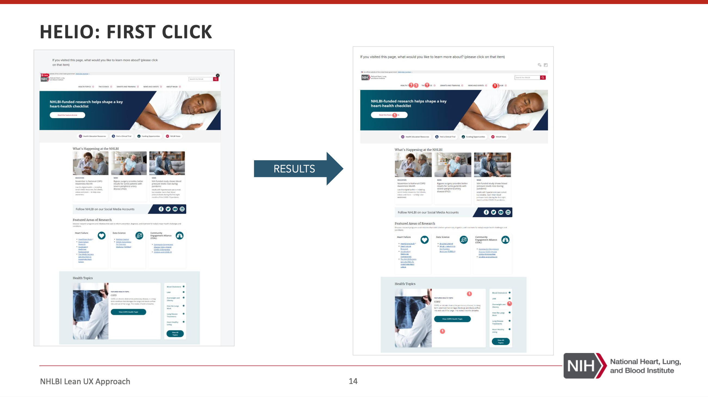
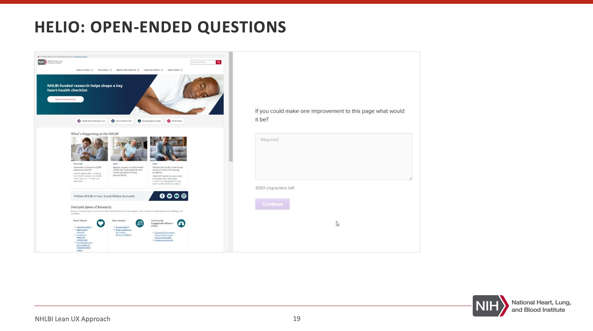
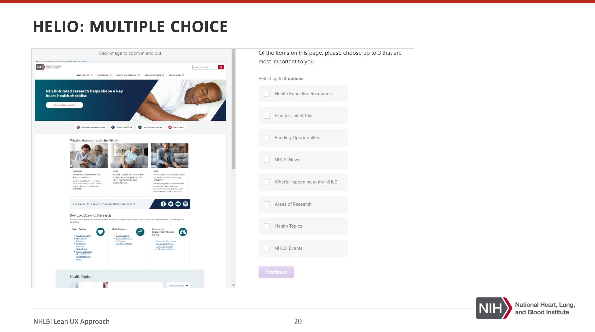
Building the Figma Component System
The homepage redesign became the starting point for a broader component effort. As we built modules for the page, we translated them into reusable Figma components so the team could scale patterns across the site.
Atomic
Typography, spacing, color usage, button styles, input states
Molecular
Card patterns, section headers, utility modules, content blocks
Organism
Hero, featured content rows, campaign sections, multi-card groups
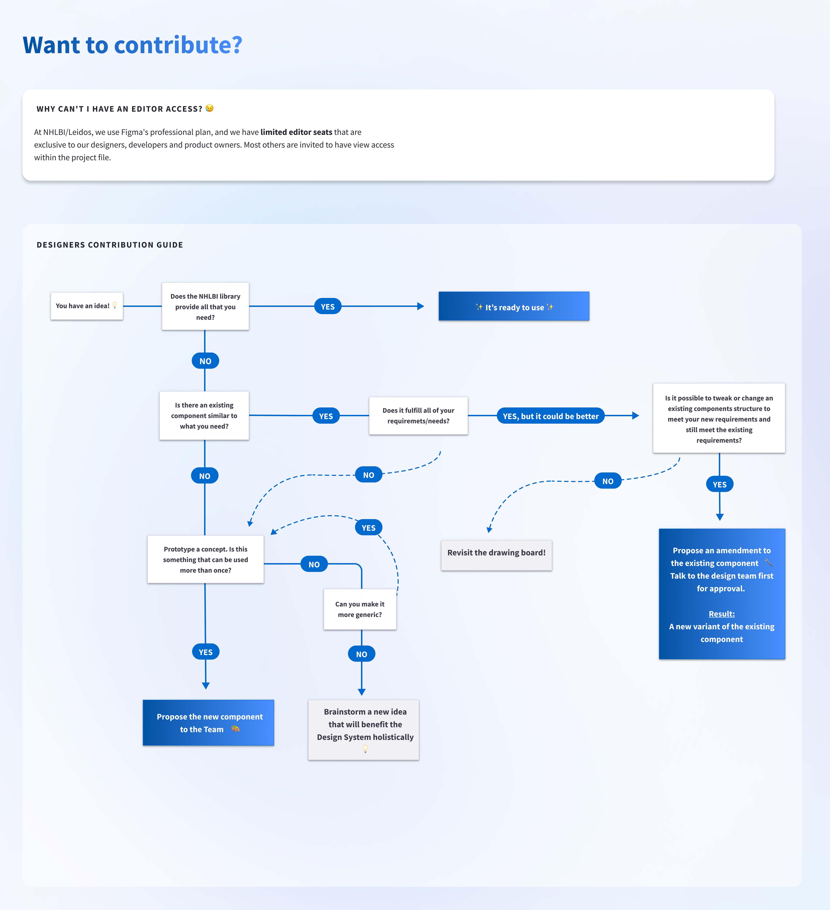
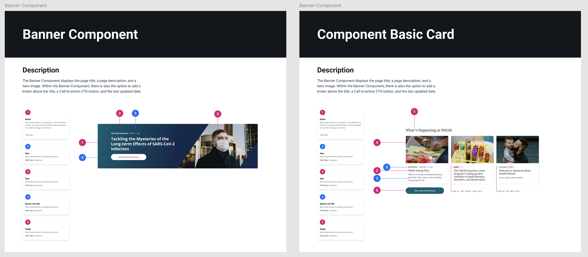
Conclusion
This work reinforced something I care a lot about: homepage design isn’t decoration. It’s wayfinding. The most meaningful improvements came from simplifying choices, clarifying hierarchy, and building patterns the team could actually reuse.